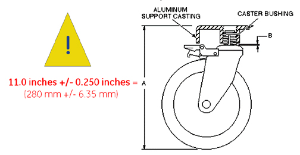

Operating Documentation
Direction 5440001-3, Rev# 6
Signa HDxt Service Methods
Module Version 1.0, Version Date 5/15/07
Operating Documentation |
Make sure that when the table height/leveling adjustment is completed that the distance measured from the floor to the top of the Table casting, (Measurement A) is between or equal to 10 ¾ and 11 ¼ inches (273.7 and 286.4mm) at all four casters. See Illustration 1.
| ||||
| Make certain that the height measurement requirement is adhered to. Not adhering to the height measurement may cause a Caster to come loose from the table. | ||||
Illustration 1: Caster Measurements

If adjustments are needed, refer to Leveling Patient Transport procedure.